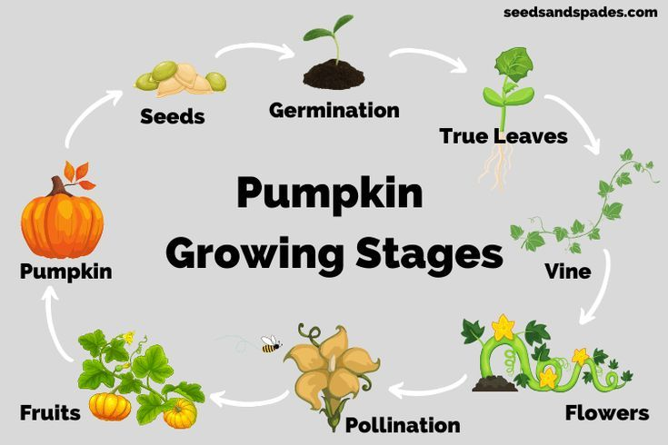
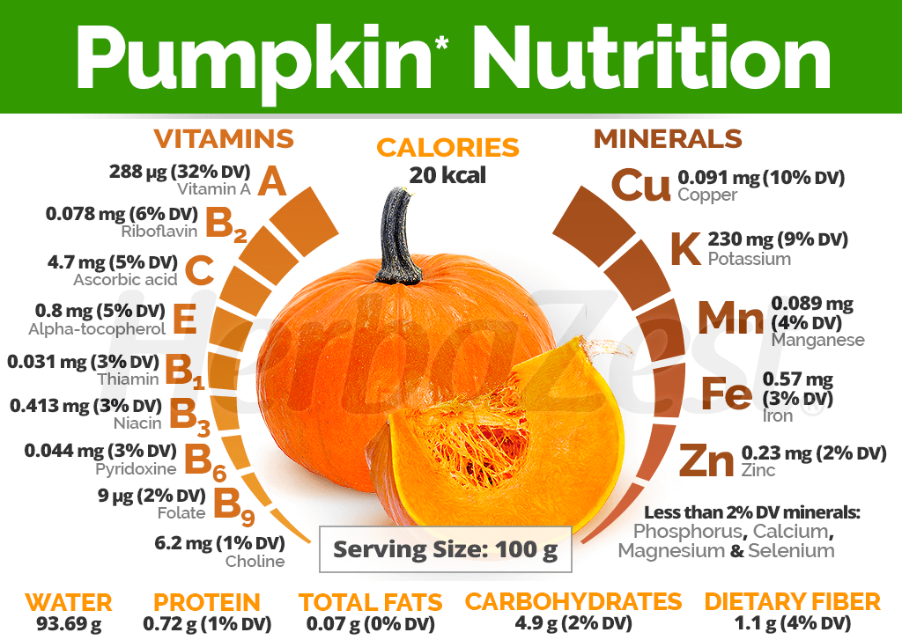
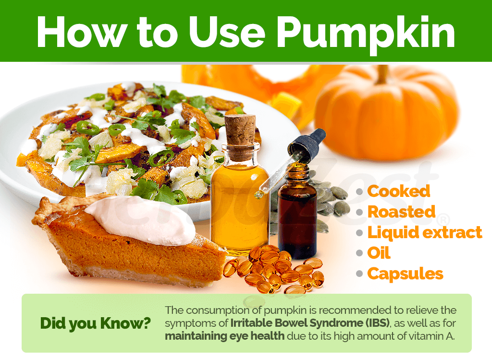
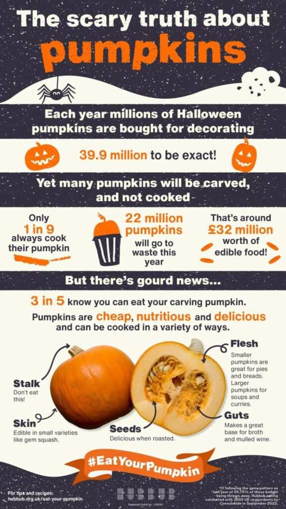

Pumpkin
Types of Pumpkins:
Carving Pumpkin:
Also Known As: Jack-o'-lantern pumpkin.
Description: Carving pumpkins are large, with a thick, orange skin and a hollow cavity.
Uses: Commonly used for carving and decoration during Halloween.
Growth Conditions: Prefers warm temperatures and well-drained soil.
Characteristics: Thick flesh and a large seed cavity.
Sugar Pumpkin:
Also Known As: Pie pumpkin.
Description: Sugar pumpkins are smaller, with a sweeter, denser flesh.
Uses: Ideal for baking, cooking, and making purees.
Growth Conditions: Thrives in warm climates with plenty of sunlight.
Characteristics: Smooth, round shape and a deep orange color.
Miniature Pumpkin:
Also Known As: Baby boo or Jack-be-little pumpkin.
Description: Miniature pumpkins are small, with a variety of colors and shapes.
Uses: Used for decoration, cooking, and as a snack.
Growth Conditions: Requires similar conditions to larger pumpkin varieties but matures faster.
Characteristics: Small size and a wide range of colors.
Heirloom Pumpkin:
Also Known As: Old-fashioned pumpkin.
Description: Heirloom pumpkins are traditional varieties, often with unique shapes, colors, and flavors.
Uses: Used for decoration, cooking, and baking.
Growth Conditions: Grows well in warm climates with adequate moisture.
Characteristics: Rare colors, shapes, and patterns.
Growing Conditions
Climate:
Temperature:
Germination Stage: Pumpkin seeds require a soil temperature of around 18°C to 30°C for optimal germination.
Vegetative Growth Stage: Prefers warm temperatures between 20°C and 30°C.
Reproductive Stage: As pumpkins transition to reproductive stages, temperatures between 25°C to 35°C are favorable.
Harvest Stage: Warm and dry conditions are ideal during harvest to ensure the pumpkins are mature and reduce moisture content, preventing spoilage.
Rainfall and Moisture:
Moderate Rainfall: Pumpkins require moderate rainfall, generally between 500mm to 800mm per growing season. Rainfall distribution should be well-timed to ensure sufficient moisture during key growth stages.
Irrigation: In regions where rainfall is insufficient, irrigation is crucial, especially during flowering and fruit development. Over-irrigation should be avoided to prevent waterlogging.
Drought Sensitivity: Pumpkins are sensitive to drought, and consistent moisture is essential for optimal fruit size and quality.
Sunlight:
Pumpkins require full sunlight for at least 6 to 8 hours a day. Adequate sunlight is essential for photosynthesis, which drives plant growth and fruit development.
Cloudy conditions can reduce photosynthetic activity and yield.
Humidity:
Pumpkins prefer moderate humidity levels. High humidity can create conditions favorable for fungal diseases, impacting yield and quality.
Proper field management practices can help manage disease pressure in high-humidity conditions.
Wind:
Mild winds can aid in pollination, but strong winds can cause lodging, making harvesting difficult.
Windbreaks can be used to protect pumpkin fields from strong winds, maintaining plant stability.
Soil:
Soil Type:
Loamy Soil: Pumpkins thrive best in loamy soils, which provide good drainage while retaining moisture.
Sandy Soil: Sandy soils are also favorable, offering good drainage and ease of root penetration.
Clayey Soil: Clayey soils can be suitable if well-drained.
Soil Structure:
Well-Drained: Pumpkins require well-drained soil to prevent waterlogging.
Good Aeration: Proper soil aeration is essential for root respiration and overall plant health.
Soil Fertility:
Nutrient-Rich: Pumpkins grow best in fertile soils with adequate levels of nitrogen, phosphorus, potassium, and micronutrients.
Organic Matter: The presence of organic matter enhances soil fertility and supports beneficial microorganisms.
Soil pH:
Optimal pH Range: Pumpkins prefer a slightly acidic to neutral soil pH, typically between 6.0 and 7.0.
pH Management: Lime can be added to acidic soils to raise the pH, while sulfur can be used to lower the pH of alkaline soils.
Soil Preparation:
Plowing and Tilling: Proper soil preparation involves plowing and tilling to create a fine seedbed.
Leveling: Leveling the field ensures uniform irrigation and prevents waterlogging.
Soil Conservation:
Erosion Control: Practices such as contour plowing and maintaining ground cover help prevent soil erosion.
Crop Rotation: Rotating pumpkins with other crops can improve soil health and reduce pest buildup.
Water Requirements:
General Water Needs:
Pumpkins require a total of approximately 500-700 millimeters (mm) of water throughout their growing season, depending on the variety, climate, and soil conditions.
Critical Growth Stages:
Germination: Adequate soil moisture is necessary for seed germination, typically requiring around 25-50 mm of water during this stage.
Seedling Stage: Consistent moisture is crucial for young plants, needing about 50-75 mm of water to establish strong roots.
Flowering Stage: During flowering, pumpkins require increased moisture, approximately 75-100 mm, to support fruit set and development.
Fruit Development Stage: This stage is critical for yield, requiring around 100-150 mm of water to ensure proper fruit filling and maturation.
Pre-Harvest Stage: Reducing water supply before harvest helps in drying the fruit, making them easier to pick and improving quality.
Drought and Stress Management:
Drought-Resistant Varieties: Plant drought-resistant pumpkin varieties in regions prone to water scarcity.
Deficit Irrigation: Implement strategies where water is applied during the most critical growth stages to manage water resources during drought conditions.
Planting and Seeding:
Planting:
Pumpkins can be sown directly in the field or started indoors and transplanted. They are typically sown in the spring when soil temperatures are warm enough for germination.
Seeding Rates:
The seeding rate varies but generally ranges from 10,000 to 20,000 seeds per hectare, depending on the variety and planting method.
Nutritional Value:
Hydration:
Pumpkins are composed of about 90% water, making them a hydrating food choice.
Vitamins and Minerals:
Pumpkins are rich in vitamins A and C, as well as minerals like potassium and magnesium.
Antioxidants:
Pumpkins contain antioxidants such as beta-carotene, which may help reduce the risk of certain diseases.
Uses:
Food Products:
Pumpkins are commonly used in soups, pies, and baked goods, as well as roasted seeds.
By-Products:
Pumpkin seeds can be roasted for snacks, and pumpkin puree is popular in various recipes and can be used in smoothies and baked goods.
Environmental Impact and Sustainability:
Pumpkin cultivation can have environmental impacts, including water usage and pesticide application. Sustainable practices such as drip irrigation, organic farming, and integrated pest management can help minimize these impacts. Implementing these practices can improve soil health and promote biodiversity.
